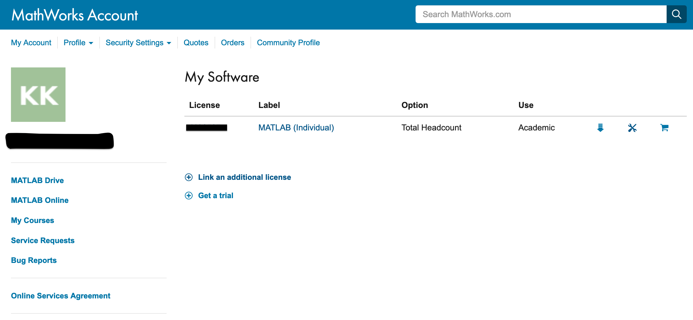
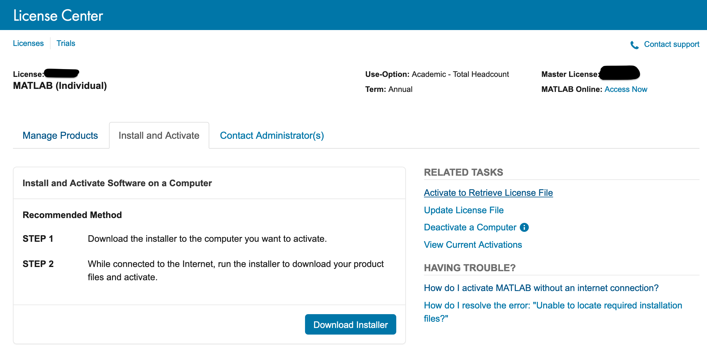
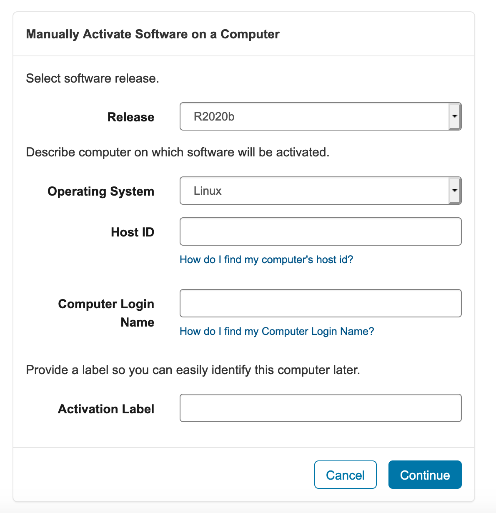
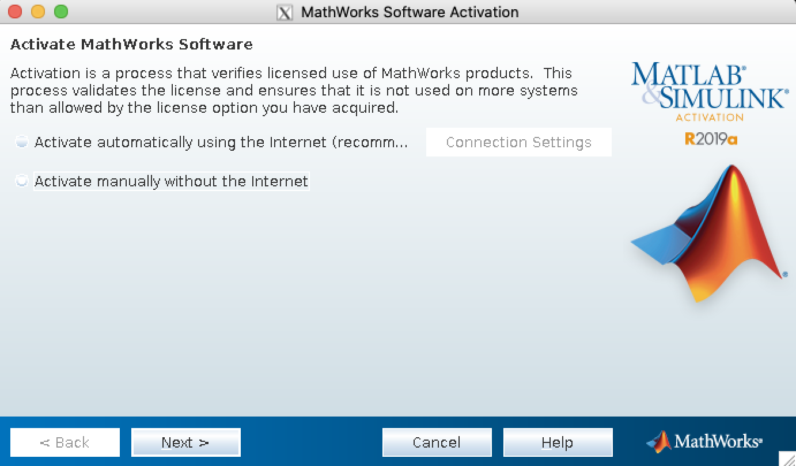

Using the MATLAB Compute Engine to send data back
and forth between PETSc and MATLAB where MATLAB commands are issued,
not interactively, but from a script or the PETSc program (this uses
the MATLAB Engine).
For the latter two approaches one must ./configure PETSc with the argument --with-matlab[--with-matlab-dir=matlab_root_directory].
One can dump PETSc matrices and vectors to the screen in an ASCII format
that MATLAB can read in directly. This is done with the command line
options -vec_view::ascii_matlab or -mat_view::ascii_matlab. To
write a file, use -vec_view:filename.m:ascii_matlab or
-mat_view:filename.m:ascii_matlab.
One can also read PETSc binary files (see
Viewers: Looking at PETSc Objects) directly into MATLAB via the scripts available
in $PETSC_DIR/share/petsc/matlab. This requires less disk space and is
recommended for all but the smallest data sizes. One can also use
to dump both a PETSc binary file and a corresponding .info file
which PetscReadBinaryMatlab.m will use to format the binary file in
more complex cases, such as using a DMDA. For an example, see
DM Tutorial ex7.
In MATLAB one may then generate a useful structure. For
example:
(port is usually set to PETSC_DEFAULT; use NULL for the
machine if the MATLAB interactive session is running on the same machine
as the PETSc program) and then sends matrices or vectors via
See Viewers: Looking at PETSc Objects for more on PETSc viewers. One may
start the MATLAB program manually or use the PETSc command
PetscStartMatlab(MPI_Comm,char*machine,char*script,FILE**fp);
where machine and script may be NULL. It is also possible to
start your PETSc program from MATLAB via launch().
To receive the objects in MATLAB, make sure that
$PETSC_DIR/$PETSC_ARCH/lib/petsc/matlab and
$PETSC_DIR/share/petsc/matlab are in the MATLAB path. Use
p=PetscOpenSocket(); (or p=PetscOpenSocket(portnum) if you
provided a port number in your call to PetscViewerSocketOpen()), and
then a=PetscBinaryRead(p); returns the object passed from PETSc.
PetscBinaryRead() may be called any number of times. Each call
should correspond on the PETSc side with viewing a single vector or
matrix. close() closes the connection from MATLAB. On the PETSc
side, one should destroy the viewer object with
PetscViewerDestroy().
For an example, which includes sending data back to PETSc, see
Vec Tutorial ex42
and the associated .m file.
If you are running PETSc on a cluster (or machine) that does not have a license for MATLAB, you might be able to run MATLAB on the
headnode of the cluster or some other machine accessible to the cluster using the -matlab_engine_hosthostname option.
To activate MATLAB on head node which does not have access to the internet. 1
First ssh into the head node using the command: ssh node_name
Obtain the Host Id using the command: ip addr | grep ether 2
You will see something like this: link/ether xx:xx:xx:xx:xx:xx ABC yy:yy:yy:yy:yy:yy
Note the value: xx:xx:xx:xx:xx:xx
Login to your MathWorks Account from a computer which has internet access. You will see the available license that your account has. Select a license from the list.

Then, select Install and Activate option and select the Activate to Retrieve License File option.

Enter the information and click Continue.

An option to download the License file will appear. Download it and copy the license file to the cluster (your home directory).
Now, launch MATLAB where you have sshed into your head node.

Select the Activate manually without the internet option and click Next >.
Browse and locate the license file.